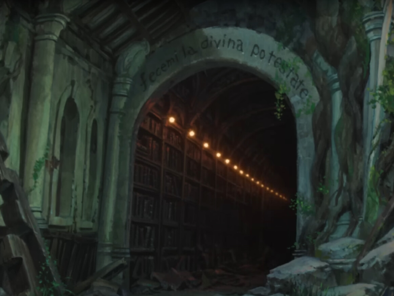
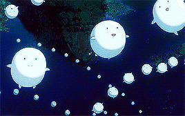
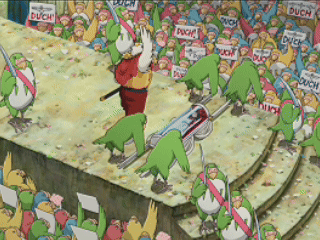

A Review of The Boy and the Heron
March 16, 2025
This review serves as my final project for HNRS 280 (W'24). It contains spoilers for The Boy and the Heron. Please watch the movie if you haven't already.
Vish
Tap the sheet music to play (or end) it.
In contrast to other Studio Ghibli films, the score of The Boy and the Heron spends much of its first hour either in ensembles of piano and chamber strings or complete silence. The film opens with its protagonist (Mahito) losing his mother in the firebombing of Tokyo. After a timeskip, his father is remarried. Mahito meets Natsuko, his father's new wife (and late mother's sister) as they evacuate to an estate in the countryside. The film is quiet. This introduction was not marked by a sweeping orchestral score, just the motif Ask Me Why:
At this estate we are introduced to the eponymous gray heron. Its goal is to lure Mahito to a tower built by his grand-uncle. Its motif is two simple pitches forming a descending melodic 4th, and it plays each time the character is on screen:
The heron attempts to convince Mahito that his mother is still alive, and in need of rescue. At first, Mahito resists this temptation and is angered by the heron's supposed insult. The heron's score picks up, as it points out to Mahito that he hasn't actually seen his mother's body.
But Mahito is ultimately saved by Natsuko who fires an arrow at the heron, causing it to flee and Mahito to faint. Mahito is taken to his bedroom. At its surface, then, The Boy and the Heron is about a boy learning to accept his mother's death and father's remarriage. Though Mahito is distant to Natsuko at the beginning of the film, they do eventually grow close. While there, Mahito finds a book left for him by his mother titled How Do You Live?. As he begins to cry, the film's full score begins to play— though it's the same motif as before:

This is interrupted when Mahito learns that Natsuko herself has been lured by the heron to the tower. He takes his makeshift bow and arrow built specifically to confront the heron, and makes his way to the tower. At its entrance there reads an inscription; fecimi la divina potestate; Italian for divine power made me. (Given that later it is revealed the tower was built around a meteor that fell from the sky, I think this is apt!) The line comes from Dante Alighieri's Inferno, where it was written on the gates of hell. As Mahito enters the tower, one of the estate's old maids, Kiriko, makes an effort to stop him. Ultimately she is pulled into the tower with him. The door shuts behind both of them the music turns into a weird frenzy.
Inside the tower, the heron taunts Mahito with a mimic of his mother. He shoots the bird with the arrow he created, piercing it in the beak, and revealing it to be a sordid bird-man on the inside. Mahito's grand-uncle appears, commanding the heron to be Mahito's guide through this underworld. They begin to sink into the floor.
Through me one goes into the city of sorrow,
Inferno, Canto III
through me one goes into the city of eternal woe,
though me one goes among the lost people.
Justice moved my high Maker;
divine power made me,
supreme wisdom and primal love.
The Boy and the Heron parallels Dante's Inferno in many ways, and the film goes so far as to make it explicit. Like Dante, Mahito is a self-insert protagonist. Miyazaki's father built planes for the Japanese during World War II, as did Mahito's father. Likewise, just as Miyazaki's mother spent much time in the hospital, so too did Mahito's mother. And later on in the film, when it's revealed that the world of the tower is created by rearranging thirteen blocks, one might notice that is the same number of animated films Miyazaki produced. The heron —if Mahito is Dante— the heron, his appointed guide, plays the role of Virgil; guiding Mahito through a world of lost souls. And just as Dante travels through hell to find Beatrice, Mahito journeys into the tower to find his mothers[1].
Mahito awakens on an island, and is saved from an attack by a swarm of pelicans by a younger Kiriko. (The older Kiriko has turned into a doll in Mahito's pocket.) A strong, capable fisherwoman, she takes Mahito to her island cove. They catch a giant fish for Warawra, cute spirits which fly to the world above to be reborn. Reincarnation is one of the ways this film tackles the theme of loss. The plane Mahito is in would be analogous to hell in Inferno, the souls here aren't damned. They're just waiting for a new life.
As the Warawara ascend toward the skies, their motif plays. It's repetitive which I would like to think symbolizes (or maybe augments the visuals of) the way they reach the sky, in spirals.

This is all ruined when the pelicans return, this time to predate the Warawara. However a young woman by the name of Lady Himi comes to their aid. Himi is Mahito's mother, Hisako. She is now eleven years old. The timeline of events in the tower is non-linear; much like the World Between Worlds. Later on in the film, it's revealed that—captivated by the tower—Hisako went missing a child:
[Aiko] We searched the whole village and couldn't find her.
The Boy and the Heron
[Izumi] Then, after a year, she came back happy and healthy. She looked the same as the day she went missing. No memory of what happened to her and grinning ear to ear.
Lady Himi destroys the pelicans with fire. Notably—while fire is what took Hisako's life—her motif is titled Rain of Fire, it sounds both playful and melancholy:

Mahito and the heron travel in search of Natsuko. They are separated, and like the Warawara, Mahito's mother comes to bail him out when he is ambushed by man-eating parakeets. She takes him to a part of the tower with a door to many worlds. They enter back to the present day and are spotted by Mahito's father, but return through the door to continue searching for Natsuko. They find her in a delivery room, and Natsuko tells Mahito that she hates him. He is attacked by paper which Himi promptly incinerates, but they are rendered unconscious and kidnapped by the parakeets.
In a dream, Mahito meets his granduncle. He is occupied with stacking thirteen stones that make up the world of the tower. He urges Mahito to succeed him. Mahito notices the stones are full of malice, and his granduncle feels more confident in his choice. His motif is the D-note in a repetitive rhythm:

Mahito wakes up, and is freed from the parakeets by the heron. Their leader, the parakeet king, plans on delivering Himi to Mahito's uncle to gain leverage. The parakeet king is the most obvious stand-in for Hitler that I've seen in a movie[2]. Just look at his rally. His supporters are holding signs with an eangle very obviously inspired by the Reichsadler. He certainly acts like a fascist dictator. Interestingly he has the same theme as Mahito's granduncle, just played on a trumpet:

I believe there are two undertones present in this part of the film here: the idea of passing the mantle to another generation and the rise of fascism. The king attempts to negotiate with Mahito's granduncle as Mahito and Himi embrace. Mahito's granduncle present Mahito with thirteen new stones, free from malice, for Mahito to succeed him. Mahito rejects this, explaining how he has a self-inflicted scar due to his own malice. The parakeet king—incensed—decides to try to stack the blocks on his own. This backfires and the dimension begins to collapse.
Mahito, Himi and the heron flee, meeting up with Natsuko and the young Kiriko. Mahito finally learns that Himi is his mother, and warns her that she's fated to die:
[Mahito] But if you go back there, you're gonna die in the fire at the hospital.
The Boy and the Heron
[Himi] Fire doesn't scare me. You know I'm really lucky to have you as a son.
[Mahito] Please don't. You've got to live, Himi.
[Himi] I hope you know what a good boy you are.
I think this exchange represents the core idea of the film. The idea that those gone aren't truly lost, they're just where they need to be. The film basically ends here. Himi returns to her childhood, with the heron telling Mahito to move on and that he will forget this. Kiriko, too, heads to her own time and the Kiriko doll transforms back into the old lady. In a couple years, Mahito returns to Tokyo with his father, Natsuko and baby brother.
This is my faovurite Ghibli film. Miyazaki's latest (final?) film does a fantastic job telling his story through Mahito. I love the way Mahito's adventure parallels the journey in Dante's Inferno. And the music—with all the motifs—accent the narrative of the film, I think incredibly well. But above all, as a film about dealing with loss, The Boy and the Heron offers a really beautiful take on reincarnation and moving on. If it really is Miyazaki's final film, its a wonderful culimation of his career.
Fin.